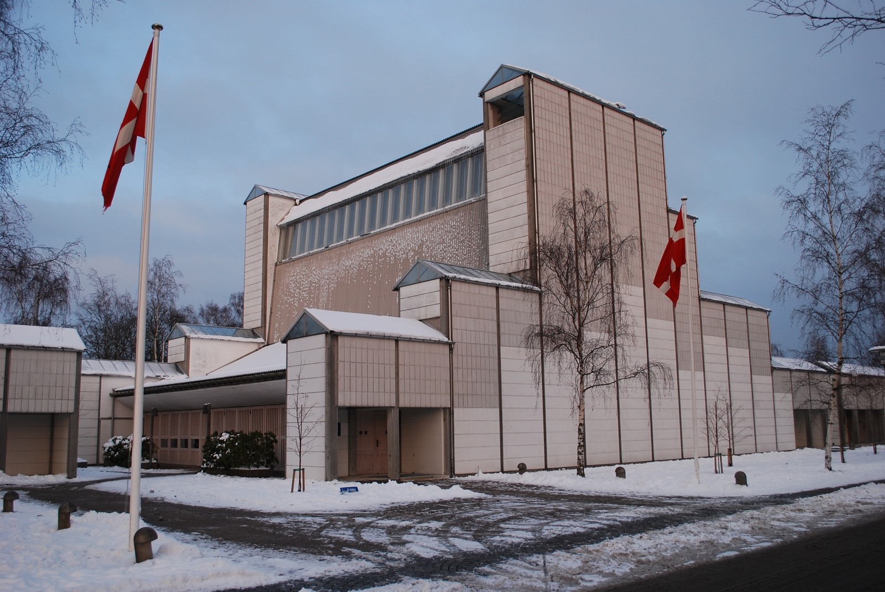

外から、形を見てみよう。
セイナッツァロの町役場と図書館。高いれんがの部分と低い棟の間に、上へ進む階段が見えます。2007年の外観です。
作品・制作の例3件を紹介しています。実作品画像2点、参照・関連画像0点。画像の収集は継続中です。
建築の批評理論・設計を考える立場。学校や統一様式ではない
Critical Regionalism
同じ建物を、世界のどこにでも置いてよいのでしょうか。
批判的地域主義（ひはんてき・ちいきしゅぎ）は、その土地の光、地形、材料、人の感覚を大切にして建築を考える立場です。
昔の家をそのまままねることでも、新しい技術をすべて断ることでもありません。
実作品を見る

画像を表示できませんでした。下の出典ページで確認できます。
アルヴァ・アアルト（設計）／エルサ・マキニエミ（現場の主任建築家） / 1949–1952（設計・建設、アアルト財団の表記）
セイナッツァロの町役場と図書館。高いれんがの部分と低い棟の間に、上へ進む階段が見えます。2007年の外観です。
セイナッツァロの町役場 / Photo: Zache, CC BY 3.0.
出典で作品・資料を見る ↗CC BY 3.0
原建築と写真の権利は別です。この外観写真の掲載を、図面・内部・家具などの自由利用の許可とは扱いません。
写真：CC BY 3.0。出典・撮影者と画像の変更内容を表示して利用します。
縦横の比率を保って縮小しJPEGで保存。切り抜き・色の変更・描き足しはしていません。
建築外観の利用について、日本・米国などの個別の条件を確認しています。全法域で原建築がパブリックドメインという意味ではありません。
画像の利用条件 ↗実作品を見る

画像を表示できませんでした。下の出典ページで確認できます。
ヨーン・ウッツォン（設計） / 1976
冬のバウスヴェア教会の外観。壁の繰り返す区切りが見えます。内部の曲がる天井は写っていません。
バウスヴェア教会 / Photo: Erik Christensen, CC BY-SA 3.0.
出典で作品・資料を見る ↗CC BY-SA 3.0
原建築と写真の権利は別です。この外観写真の掲載を、図面・内部・家具などの自由利用の許可とは扱いません。
写真：CC BY-SA 3.0。出典・撮影者と画像の変更内容を表示して利用します。
縦横の比率を保って縮小しJPEGで保存。切り抜き・色の変更・描き足しはしていません。
建築外観の利用について、日本・米国などの個別の条件を確認しています。全法域で原建築がパブリックドメインという意味ではありません。
画像の利用条件 ↗建築
フランプトンの論考で、見るだけでなく体で感じる建築の例に挙がります。れんがの階段から木の床の議場へ進むとき、足元の感触や音が変わることに注目します。
作品・資料の出典を見る ↗作品名（出典表記）：Säynätsalo Town Hall（セイナッツァロの町役場）
Alvar Aalto（アルヴァ・アアルト）。現場の主任建築家はElsa Mäkiniemi（エルサ・マキニエミ）（後のElissa Aalto（エリッサ・アアルト）） / 1949–1952（設計・建設、アアルト財団の表記） / 建築
教会建築
繰り返す部材による外側と、波のように曲がる天井を持つ内側を組み合わせました。フランプトンは、共通の工業技術と、場所に意味を与える形が出会う例として論じています。
作品・資料の出典を見る ↗作品名（出典表記）：Bagsværd Church（バウスヴェア教会）
Jørn Utzon（ヨーン・ウッツォン） / 1976 / 教会建築
建築批評・論考
建物の形をまねるための見本ではなく、場所や材料、身体の感覚から建築を考える文章です。建物の完成年と、理論がまとめられた年を分けるために取り上げます。
作品・資料の出典を見る ↗作品名（出典表記）：Towards a Critical Regionalism: Six Points for an Architecture of Resistance（批判的地域主義に向けて）
Kenneth Frampton（ケネス・フランプトン） / 1983（原論考。リンクは建築誌オアーセによる再掲・翻訳） / 建築批評・論考
1983年の論考で、ケネス・フランプトンは、場所の違いが失われる建築を問い直しました。
「批判的」とは、何でも悪く言うことではなく、当たり前に見えるやり方を確かめ直すことです。
彼が例に挙げた建物には、論考より前につくられたものがあります。
建築家が同じ団体に入って、この理論の通りにつくったという意味ではありません。
決まった配色はありません。れんがなど材料の色と、その土地で当たる光を一緒に考えます。
この理論に専用の書体はありません。文字の様式ではなく、建築と場所の関係を扱います。
地面の高低差にどう合わせるか、光をどこから入れるか。建物の輪郭だけでなく、その理由を調べます。
見た目だけでなく、歩いたときの足の感触、音、温度も考えます。写真から分かることと、現地で感じることは別です。
地域の昔ながらの建物を、形だけそのまま写す立場とは違います。また、北欧モダンのような地域別の呼称でもありません。同じ町役場を、北欧の建築として見ることも、フランプトンの議論に登場する例として読むこともできます。
学校や図書館を思い浮かべてみましょう。日差し、雨、坂道、風に合わせた工夫はあるでしょうか。ここでは建物を理論に当てはめて判定するより、場所との関係を考える問いとして使います。
建築2件と理論を示す論考1件です。代表建築3件と数えません。すべての地域に一つの理論を押しつけることを避け、フランプトンが実際に論じた例に限定しました。
作品・制作の例3件を紹介しています。実作品画像2点、参照・関連画像0点。画像の収集は継続中です。